Elementos de hardware
Los componentes físicos del ordenador: componentes esenciales, procesamiento, almacenamiento, memoria, refrigeración, periféricos y puertos de comunicación.
1 · ¿Qué es el hardware?
El hardware es el conjunto de componentes físicos de un sistema informático, es decir, todas las partes que podemos ver y tocar.
Incluye desde los elementos internos del ordenador (procesador, memoria o disco duro) hasta dispositivos externos como el teclado, el monitor o la impresora.
💡 Idea clave: si se puede tocar, es hardware. Es la parte física del sistema informático.
El hardware permite ejecutar aplicaciones esenciales: gestión de historias clínicas electrónicas, gestión de citas, atención al paciente, comunicación interna y almacenamiento seguro de información.
El ordenador de un mostrador de admisión, el lector de tarjetas sanitarias y la impresora de etiquetas son hardware.
¿Podría funcionar un ordenador únicamente con software? No: necesita hardware para ejecutar las instrucciones.
Hardware = componentes físicos y tangibles (internos y externos) que sostienen todo el sistema informático.
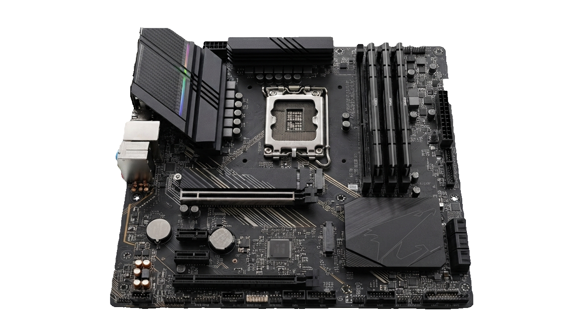
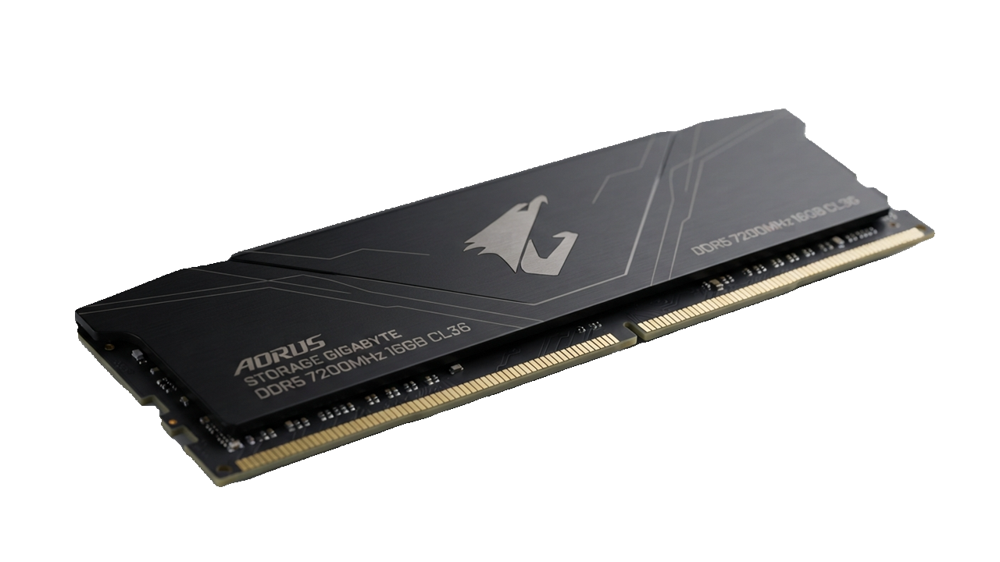
🧩 Cuestionario en Aules: tras repasar este apartado, realiza el cuestionario «HW-01 ¿Qué es el hardware?» en la plataforma Aules. Las preguntas son aleatorias y se guardará tu mejor nota.
2 · Componentes esenciales
Los componentes esenciales son aquellos que permiten el funcionamiento básico de cualquier ordenador.
2.1 · Placa base
La placa base es la placa principal del ordenador. Sobre ella se conectan el resto de componentes y se establece la comunicación entre todos ellos.
- Función: conectar todos los componentes y permitir la comunicación entre procesador, memoria, almacenamiento y periféricos.
- Ubicación: ocupa gran parte del interior de la carcasa.
- Curiosidad: algunas placas incorporan indicadores LED que ayudan a localizar averías durante el arranque.
Permite la comunicación entre todos los componentes de los equipos utilizados en admisión, consultas médicas, laboratorios y servicios administrativos.
¿Qué podría ocurrir en un centro sanitario si falla la placa base de un ordenador? El equipo dejaría de funcionar correctamente, impidiendo el acceso a citas, historiales clínicos y aplicaciones de gestión.
2.2 · Fuente de alimentación
La fuente de alimentación convierte la corriente eléctrica procedente de la red en los diferentes voltajes que necesitan los componentes internos del ordenador.
- Función: suministrar energía eléctrica estable y proteger frente a algunas variaciones de tensión.
- Ubicación: habitualmente en la parte superior o inferior de la caja del ordenador.
- Curiosidad: una fuente de mala calidad puede provocar averías en otros componentes.
Proporciona energía a los equipos que gestionan historias clínicas, citas médicas y documentación sanitaria.
¿Por qué es importante que la fuente de alimentación sea fiable en un centro sanitario? Porque una avería puede provocar apagados inesperados, pérdida de información o interrupción de servicios.
Placa base (comunica todo) + fuente de alimentación (da energía estable) son la base física de cualquier equipo.
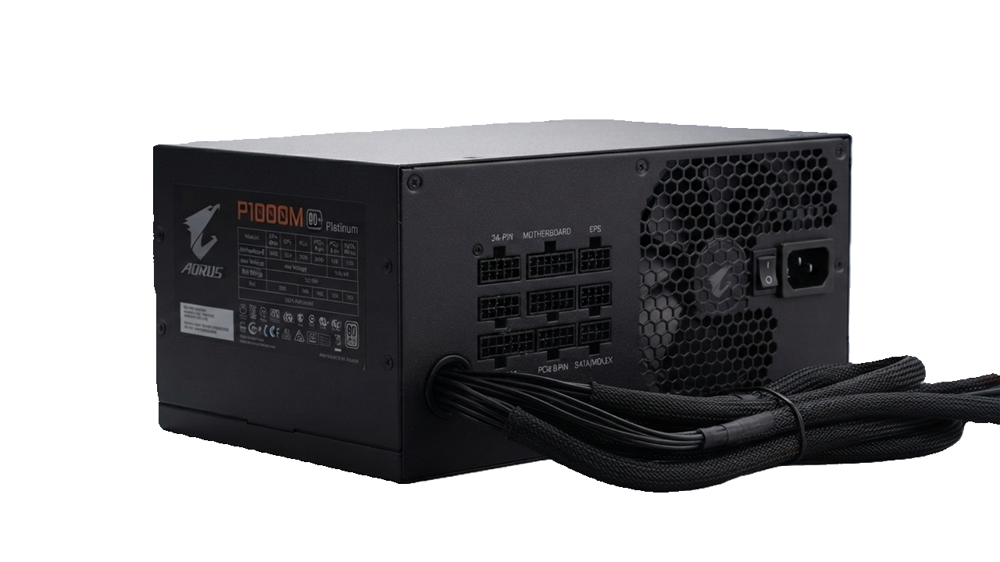
🧩 Cuestionario en Aules: tras repasar este apartado, realiza el cuestionario «HW-02 Componentes esenciales» en Aules. Las preguntas son aleatorias y se guardará tu mejor nota.
3 · Hardware de procesamiento
Los componentes de procesamiento son los encargados de ejecutar instrucciones y realizar cálculos.
3.1 · Procesador (CPU)
La CPU (Central Processing Unit) se considera el cerebro del ordenador.
- Función: ejecutar instrucciones, realizar cálculos y coordinar el funcionamiento del sistema.
- Ubicación: en un zócalo específico de la placa base, cubierto por un disipador y un ventilador.
- Curiosidad: los procesadores actuales contienen miles de millones de transistores.
Ejecuta programas de gestión de pacientes, historia clínica electrónica, facturación sanitaria y aplicaciones de ofimática.
¿Qué consecuencias tendría usar un equipo con una CPU poco potente para gestionar cientos de pacientes al día? Las aplicaciones funcionarían más lentamente, aumentando los tiempos de espera y reduciendo la productividad.
3.2 · Tarjeta gráfica (GPU)
La GPU (Graphics Processing Unit) es el componente encargado de procesar imágenes y gráficos.
- Función: generar imágenes y acelerar cálculos paralelos especializados.
- Ubicación: se conecta a una ranura PCIe de la placa base.
- Curiosidad: actualmente se utiliza también en inteligencia artificial.
Es fundamental en radiología, diagnóstico por imagen y visualización de TAC o resonancias magnéticas.
¿Por qué es importante una GPU potente en radiología? Porque permite visualizar imágenes médicas de alta resolución de forma rápida y precisa.
La CPU ejecuta y calcula; la GPU genera y acelera imágenes. Ambas procesan información.
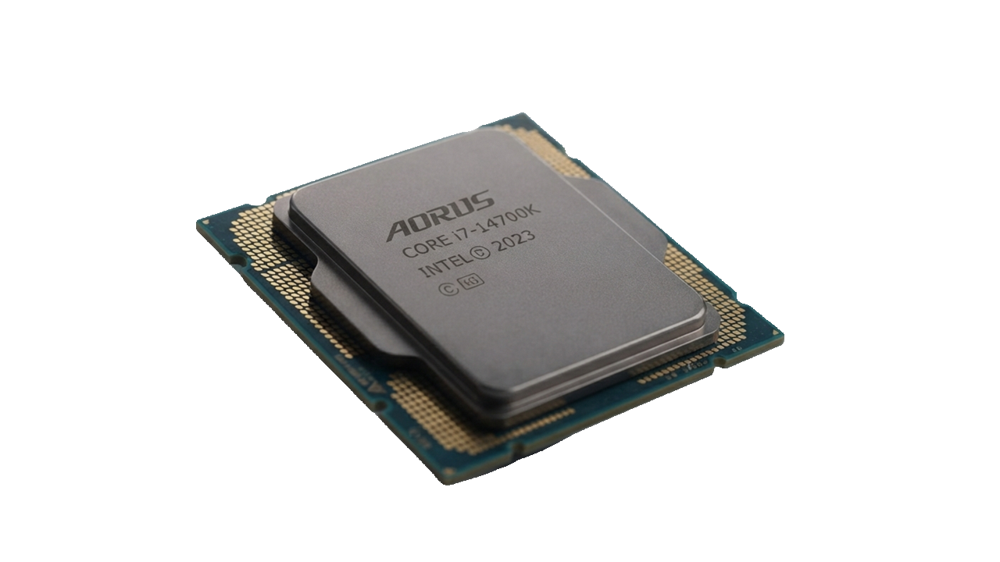
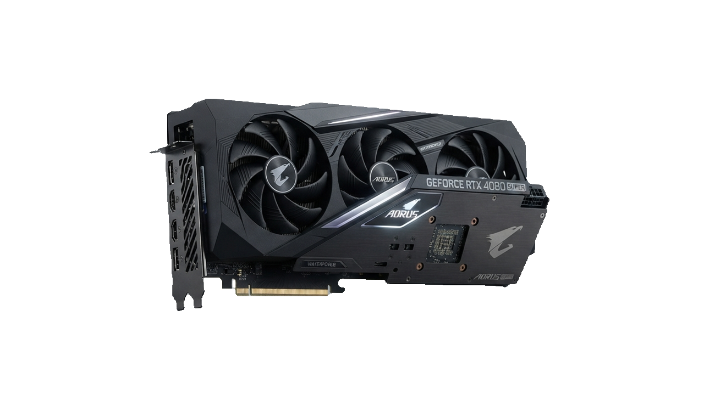
🧩 Cuestionario en Aules: tras repasar este apartado, realiza el cuestionario «HW-03 Hardware de procesamiento» en Aules. Las preguntas son aleatorias y se guardará tu mejor nota.
4 · Hardware de almacenamiento
Estos componentes permiten guardar información de manera temporal o permanente.
4.1 · Disco duro (HDD)
El HDD (Hard Disk Drive) utiliza discos magnéticos para almacenar información.
- Función: guardar datos de forma permanente.
- Ubicación: en una bahía de almacenamiento, conectado mediante cables SATA.
- Tipo: almacenamiento permanente (no volátil).
- Curiosidad: permite almacenar mucha información a un coste reducido.
Se utiliza para copias de seguridad, archivos históricos y grandes volúmenes de documentación sanitaria.
¿Qué tipo de información sanitaria es más adecuado almacenar en un HDD? Copias de seguridad y documentos que no necesitan consultarse continuamente.
4.2 · Unidad de estado sólido (SSD)
El SSD (Solid State Drive) utiliza memoria flash para almacenar información.
- Función: guardar de manera permanente el sistema operativo, los programas y los archivos.
- Ubicación: mediante SATA o directamente en una ranura M.2.
- Tipo: almacenamiento permanente (no volátil).
- Curiosidad: no tiene partes móviles, por lo que es más rápido y resistente.
Permite acceder rápidamente a historiales clínicos y aplicaciones sanitarias.
¿Qué consecuencias tendría para la atención al paciente que el acceso a las historias clínicas fuera muy lento? Retrasos en consultas, gestiones y toma de decisiones.
HDD (mucho espacio, menor coste) frente a SSD (más rápido, sin partes móviles). Ambos guardan datos de forma permanente.
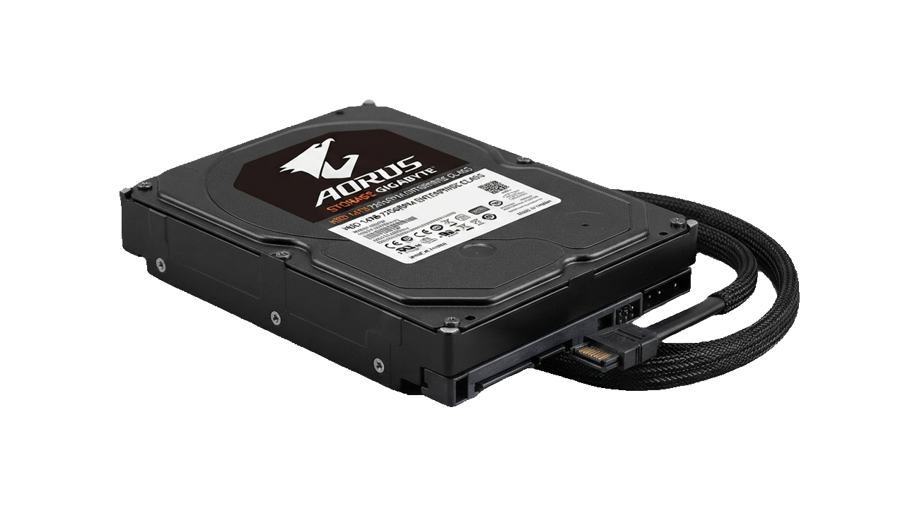
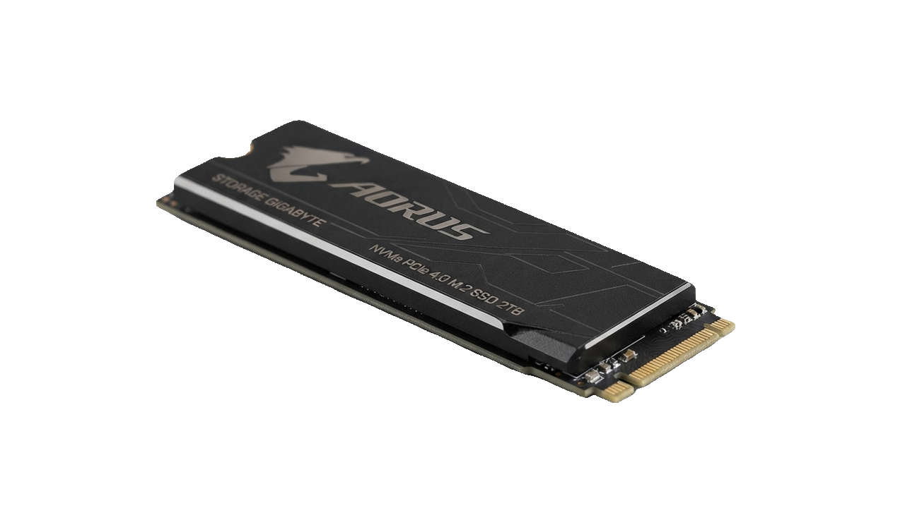
🧩 Cuestionario en Aules: tras repasar este apartado, realiza el cuestionario «HW-04 Hardware de almacenamiento» en Aules. Las preguntas son aleatorias y se guardará tu mejor nota.
5 · Tipos de memoria
Además del almacenamiento permanente, un ordenador utiliza diferentes tipos de memoria para arrancar el sistema, ejecutar programas y mejorar el rendimiento. Cada tipo tiene una función específica.
5.1 · Memoria RAM
La memoria RAM (Random Access Memory) es la memoria principal: almacena temporalmente los datos y programas que se están utilizando en cada momento.
- Tipo: memoria principal volátil (su contenido desaparece al apagar el ordenador).
- Función: guardar los datos de las aplicaciones abiertas y permitir ejecutar varios programas a la vez.
- Ubicación: módulos específicos conectados a la placa base.
- Curiosidad: si la RAM se llena, el sistema puede usar memoria virtual, más lenta.
Permite utilizar a la vez la historia clínica electrónica, el correo corporativo, las aplicaciones de gestión sanitaria y las herramientas ofimáticas.
¿Qué ocurre si un ordenador tiene poca RAM y se abren muchas aplicaciones a la vez? El sistema se vuelve más lento porque tiene dificultades para almacenar temporalmente toda la información necesaria.
5.2 · Memoria ROM
La memoria ROM (Read-Only Memory) almacena las instrucciones básicas necesarias para iniciar el ordenador.
- Tipo: memoria permanente no volátil.
- Función: almacenar el firmware del sistema (UEFI) y permitir el arranque.
- Ubicación: integrada en un chip de la placa base.
- Curiosidad: actualmente contiene el firmware UEFI, sucesor de la antigua BIOS.
Garantiza el arranque correcto de los equipos utilizados en hospitales, centros de salud y consultas.
5.3 · Memoria caché
La memoria caché es una memoria muy rápida integrada en el procesador.
- Tipo: memoria ultrarrápida de apoyo al procesador.
- Función: almacenar temporalmente los datos más utilizados por la CPU y reducir los tiempos de acceso.
- Características: más rápida que la RAM, de poca capacidad, funciona automáticamente.
5.4 · Memoria virtual
La memoria virtual es un espacio del disco duro o SSD que el sistema operativo usa cuando la RAM es insuficiente.
- Tipo: memoria lógica gestionada por el sistema operativo (no es física).
- Características: más lenta que la RAM y se gestiona automáticamente.
5.5 · Otros tipos de memoria
- Memoria Flash: no volátil, usada en pendrives, tarjetas SD y SSD. En sanidad, para copias de seguridad.
- Memoria CMOS: guarda fecha, hora y parámetros del hardware; mantiene la configuración con el equipo apagado.
- Memoria VRAM: integrada en la tarjeta gráfica; fundamental para la visualización de imágenes médicas en radiología, TAC y resonancias.
💡 Idea clave: RAM es la mesa de trabajo (rápida, volátil); ROM arranca el sistema; caché acelera a la CPU; la virtual ayuda cuando la RAM falla.
RAM (trabajo), ROM (arranque), caché (velocidad), virtual (apoyo) y flash/CMOS/VRAM para funciones específicas.
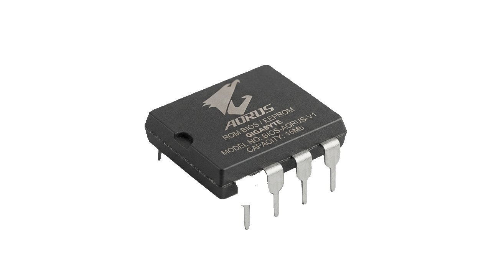
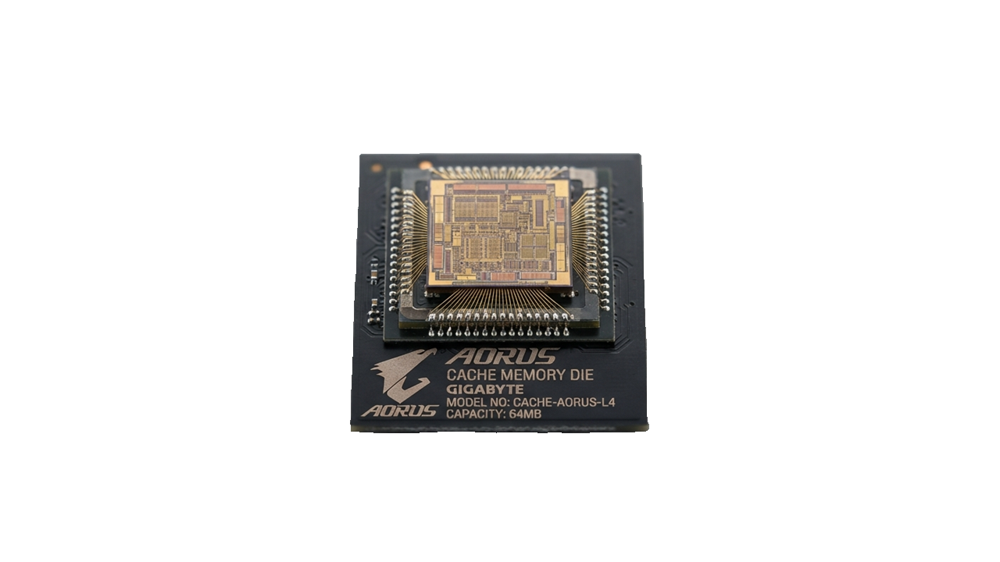
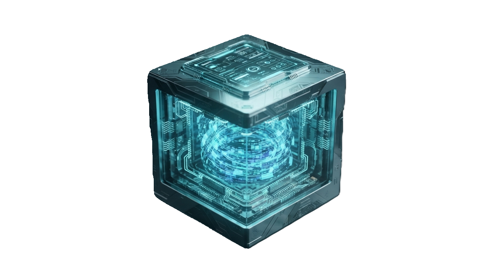
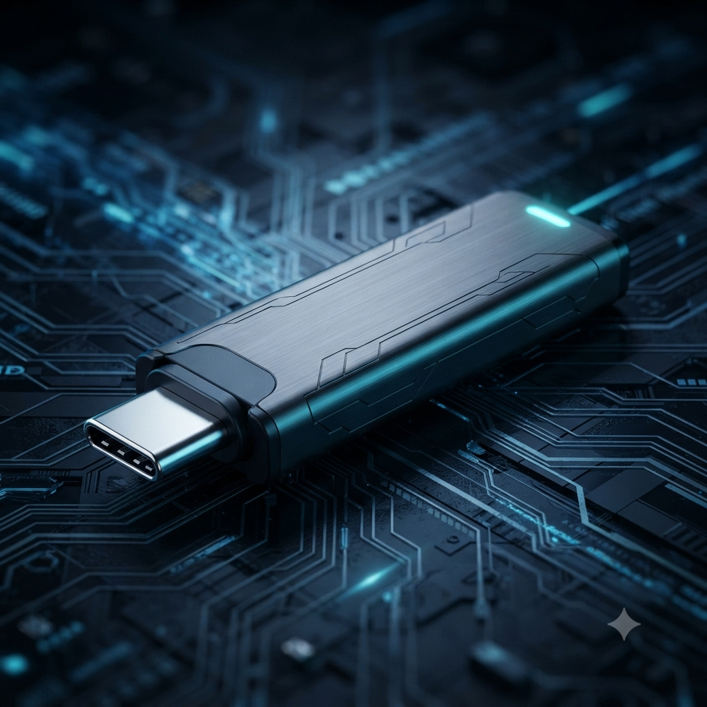
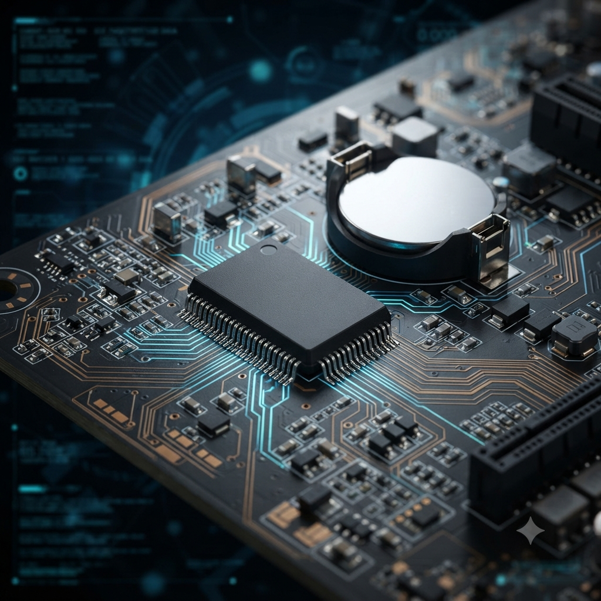
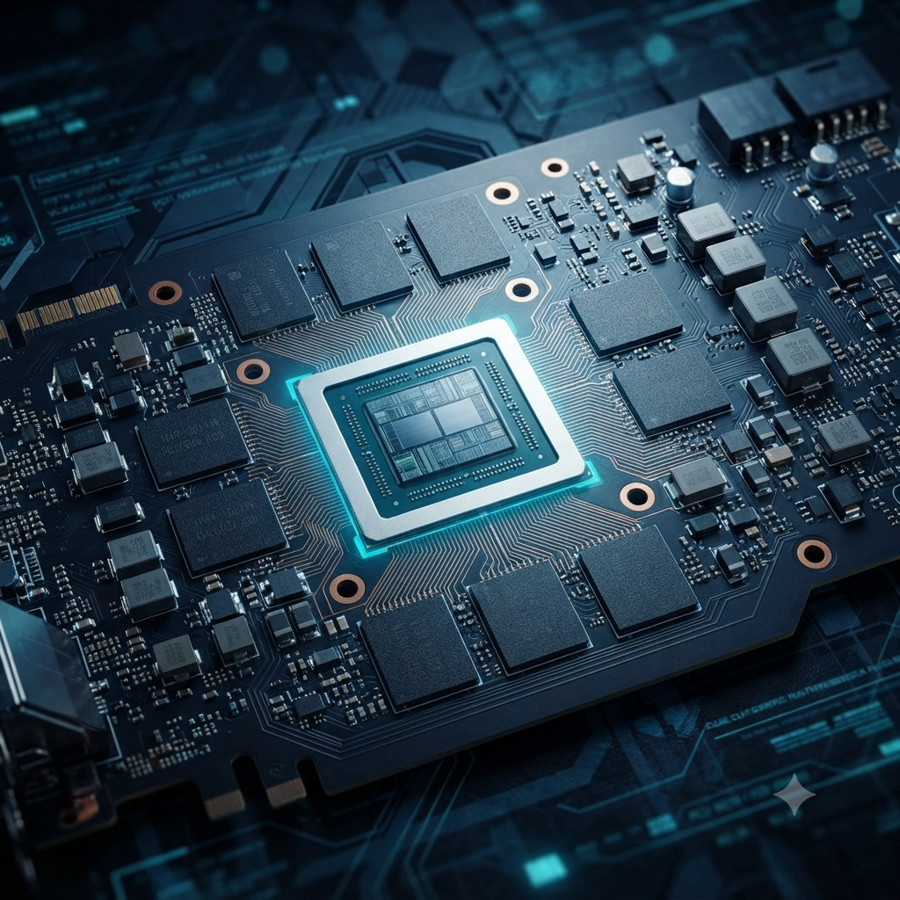
🧩 Cuestionario en Aules: tras repasar este apartado, realiza el cuestionario «HW-05 Tipos de memoria» en Aules. Las preguntas son aleatorias y se guardará tu mejor nota.
6 · Sistemas de refrigeración
Los componentes electrónicos generan calor. Si la temperatura aumenta demasiado, el rendimiento disminuye y pueden producirse averías.
6.1 · Ventilador
El ventilador genera un flujo constante de aire para reducir la temperatura.
- Función: evitar el sobrecalentamiento de los componentes.
- Ubicación: en la CPU, la GPU o la carcasa del equipo.
- Curiosidad: algunos ventiladores modifican su velocidad según la temperatura.
Permite que los equipos funcionen durante jornadas completas sin problemas de temperatura.
¿Qué podría suceder si el ventilador deja de funcionar correctamente? El equipo podría sobrecalentarse, reducir su rendimiento o apagarse automáticamente.
6.2 · Disipador térmico
El disipador es una pieza metálica diseñada para absorber y dispersar el calor.
- Función: extraer el calor generado por la CPU o la GPU.
- Ubicación: directamente sobre el procesador o la tarjeta gráfica.
- Curiosidad: suele fabricarse en aluminio o cobre, excelentes conductores térmicos.
Ventilador (mueve el aire) + disipador (absorbe el calor): juntos evitan el sobrecalentamiento y protegen los componentes.
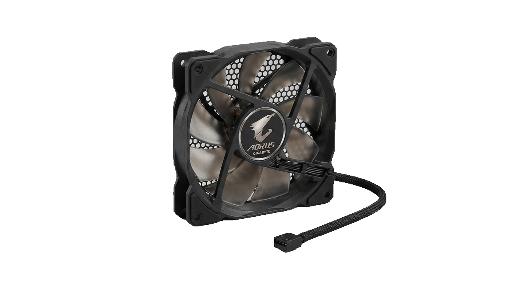
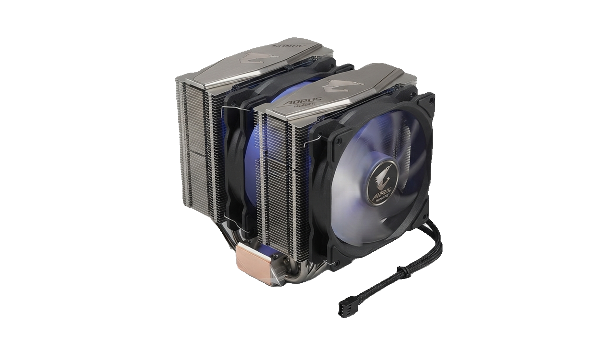
🧩 Cuestionario en Aules: tras repasar este apartado, realiza el cuestionario «HW-06 Sistemas de refrigeración» en Aules. Las preguntas son aleatorias y se guardará tu mejor nota.
7 · Periféricos
Los periféricos son dispositivos externos que se conectan al ordenador para introducir información, mostrar resultados o intercambiar datos.
Permiten registrar datos de pacientes, digitalizar documentación, imprimir informes médicos, participar en videoconferencias o identificar usuarios mediante tarjetas sanitarias.
7.1 · Hardware de entrada
Permiten introducir información en el ordenador.
| Periférico | Función | Aplicación sanitaria |
|---|---|---|
| Teclado | Escribir texto, números y comandos | Datos de pacientes, informes y citas |
| Ratón | Mover el puntero, seleccionar y ejecutar | Historias clínicas electrónicas y agendas |
| Escáner | Digitalizar documentos físicos | Consentimientos, informes y solicitudes |
| Lector de tarjetas sanitarias | Identificar usuarios | Identificación segura de pacientes y profesionales |
| Micrófono | Capturar sonido | Videoconferencias, telemedicina y dictado |
💡 Idea clave: «entrada» = la información viaja desde el usuario hacia el ordenador.
7.2 · Hardware de salida
Muestran o transmiten la información procesada por el ordenador.
| Periférico | Función | Aplicación sanitaria |
|---|---|---|
| Monitor | Mostrar visualmente la información | Historias clínicas e informes |
| Impresora | Producir copias físicas | Recetas, informes, etiquetas y listados |
| Altavoces | Reproducir sonido | Videoconferencias y formación online |
| Proyector | Proyectar a gran tamaño | Formación y reuniones clínicas |
💡 Idea clave: «salida» = la información viaja desde el ordenador hacia el usuario.
7.3 · Hardware de entrada/salida
Capaces tanto de recibir como de enviar información.
| Periférico | Función | Aplicación sanitaria |
|---|---|---|
| Pantalla táctil | Mostrar y recibir acciones con el tacto | Mostradores de atención y autoservicio |
| Impresora multifunción | Imprimir, escanear y a veces fax | Gestión de documentación con un único equipo |
| USB y discos duros externos | Guardar y trasladar archivos | Copias de seguridad e intercambio |
¿Por qué es importante proteger los dispositivos de almacenamiento portátiles? Porque pueden contener información sensible cuya pérdida o acceso no autorizado podría comprometer la seguridad de los datos.
Entrada (teclado, ratón, escáner…), salida (monitor, impresora…) y entrada/salida (pantalla táctil, multifunción, USB).
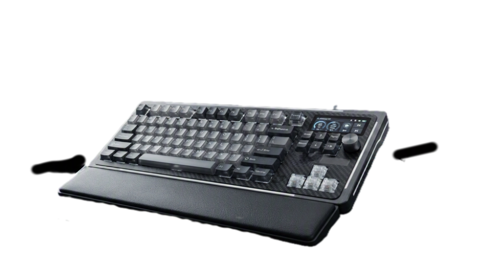
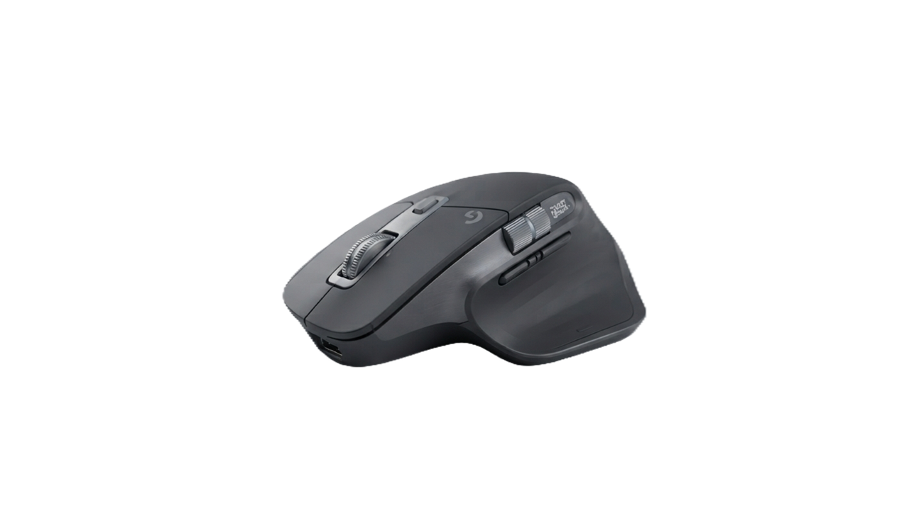
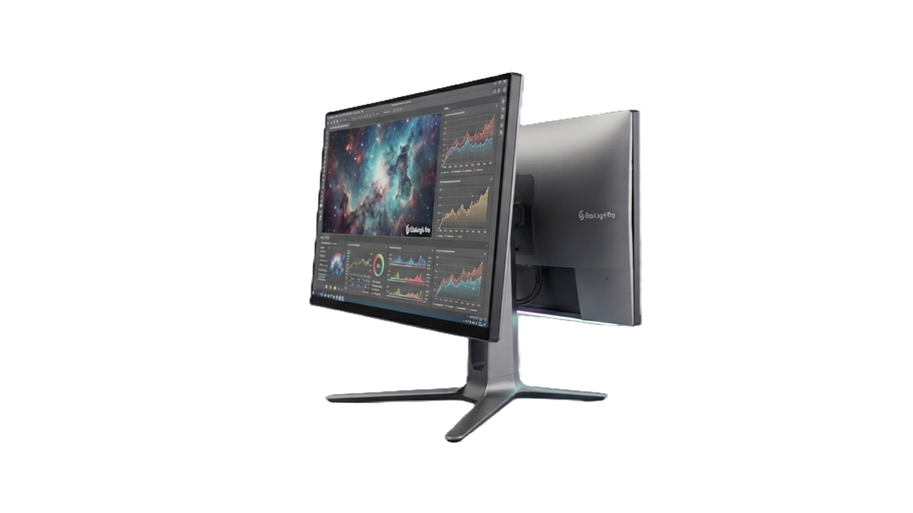
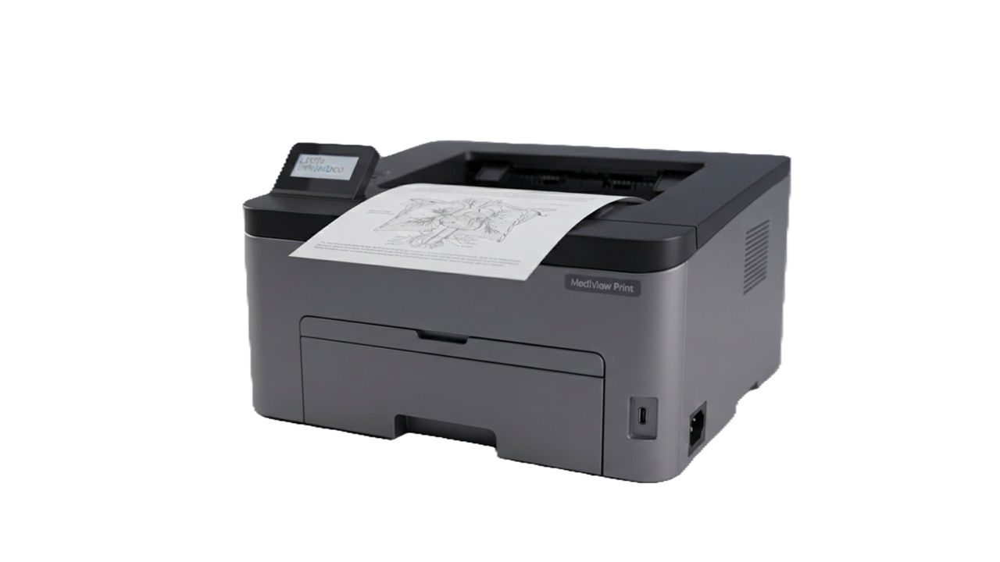
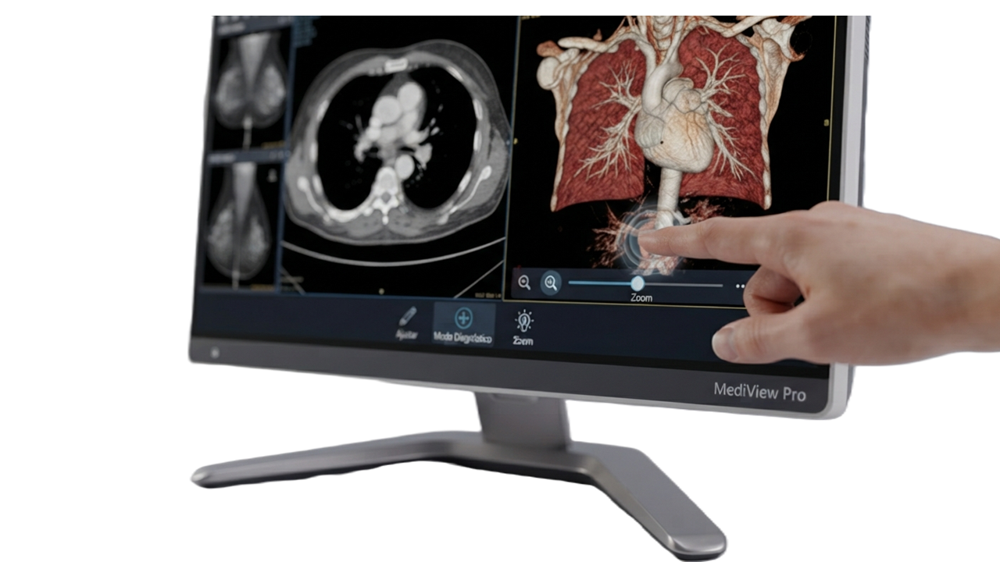
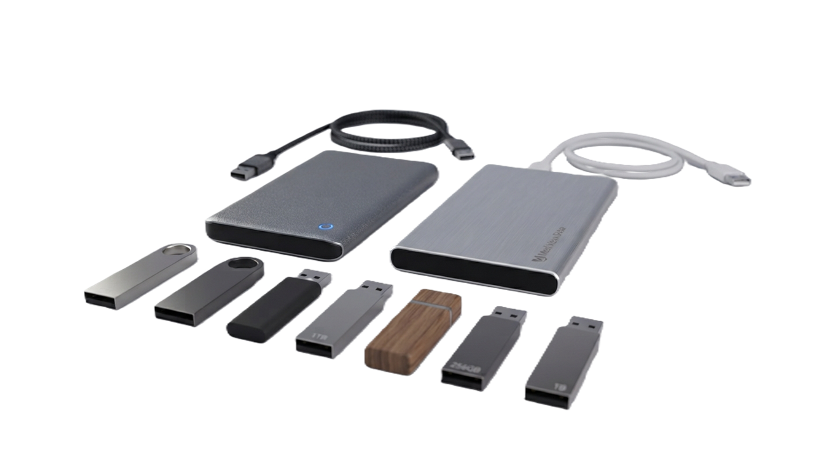
🧩 Cuestionario en Aules: tras repasar este apartado, realiza el cuestionario «HW-07 Periféricos» en Aules. Las preguntas son aleatorias y se guardará tu mejor nota.
8 · Puertos de comunicación
Los puertos de comunicación son interfaces físicas que permiten conectar dispositivos externos para intercambiar información, transmitir audio o vídeo, acceder a redes o suministrar energía.
💡 Idea clave: conocer los puertos es fundamental para el mantenimiento y el uso correcto de los equipos, especialmente en entornos profesionales como el sanitario.
8.1 · Puertos de datos
| Puerto | Descripción | Aplicación sanitaria |
|---|---|---|
| USB-A | Conector USB tradicional rectangular | Teclados, ratones, impresoras y lectores de tarjetas |
| USB-B | Conector cuadrado de impresoras y escáneres | Documentación clínica y administrativa |
| USB-C | Conector moderno, reversible y pequeño | Portátiles modernos y móviles corporativos |
| Thunderbolt | Alta velocidad, mismo conector que USB-C | Estaciones de trabajo y diagnóstico por imagen |
8.2 · Puertos de red
| Puerto | Descripción | Aplicación sanitaria |
|---|---|---|
| RJ45 (Ethernet) | Conector para cable de red local | Acceso a historias clínicas y aplicaciones corporativas |
8.3 · Puertos de vídeo
| Puerto | Descripción | Aplicación sanitaria |
|---|---|---|
| HDMI | Vídeo y audio de alta calidad en un cable | Monitores clínicos, proyectores y formación |
| DisplayPort | Interfaz digital para alta resolución | Estaciones de radiología y diagnóstico por imagen |
| DVI | Vídeo digital anterior a HDMI | Equipos antiguos aún en uso |
8.4 · Puertos de audio
| Puerto | Descripción | Aplicación sanitaria |
|---|---|---|
| Jack 3,5 mm | Conector analógico para auriculares, micrófonos y altavoces | Videoconferencias, telemedicina y multimedia |
8.5 · Puertos históricos o en desuso
Conocerlos ayuda a identificar equipos heredados y comprender la evolución del hardware.
| Puerto | Uso histórico | Situación actual |
|---|---|---|
| FireWire (IEEE 1394) | Transferencia rápida de vídeo digital | Sustituido por USB 3.x y Thunderbolt |
| eSATA | Almacenamiento externo a gran velocidad | Sustituido por USB 3.x y USB-C |
| VGA | Vídeo analógico a monitor | Obsoleto, sustituido por HDMI y DisplayPort |
| PS/2 | Teclados (morado) y ratones (verde) | Sustituido por USB |
¿Por qué crees que algunos puertos han desaparecido y han sido sustituidos? Porque las nuevas tecnologías ofrecen mayores velocidades, más funcionalidades, mejor compatibilidad y diseños más sencillos y versátiles.
Datos (USB-A/B/C, Thunderbolt), red (RJ45), vídeo (HDMI, DisplayPort, DVI), audio (Jack) e históricos (FireWire, eSATA, VGA, PS/2).
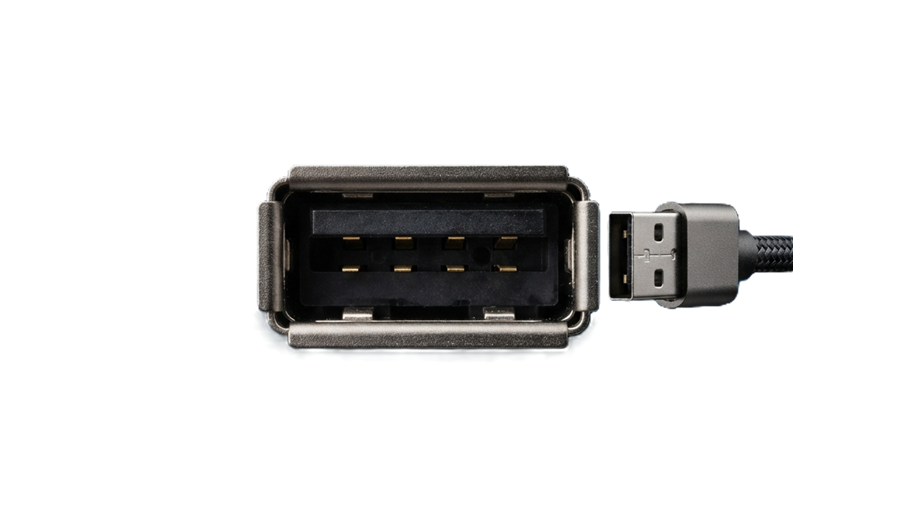
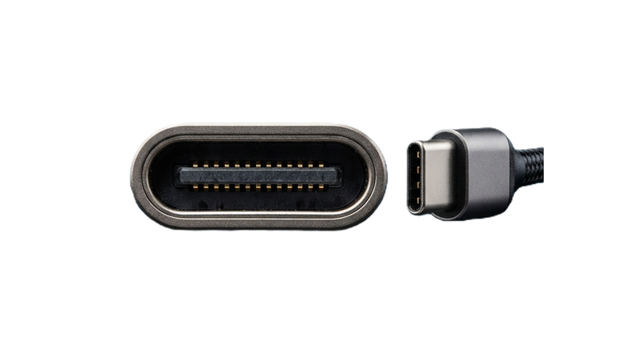
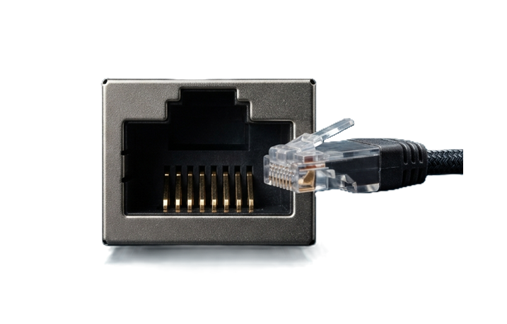
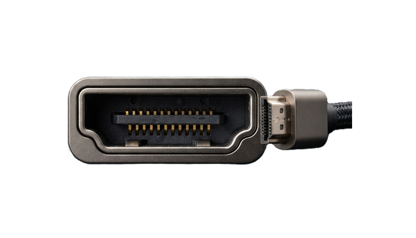
🧩 Cuestionario en Aules: tras repasar este apartado, realiza el cuestionario «HW-08 Puertos de comunicación» en Aules. Las preguntas son aleatorias y se guardará tu mejor nota.
9 · Mapa conceptual del hardware
Así se organiza todo lo estudiado en este bloque:
HARDWARE
├── Componentes esenciales → Placa base · Fuente de alimentación
├── Hardware de procesamiento → CPU · GPU
├── Hardware de almacenamiento → HDD · SSD
├── Tipos de memoria → RAM · ROM · Caché · Virtual · Flash · CMOS · VRAM
├── Sistemas de refrigeración → Ventilador · Disipador térmico
├── Periféricos
│ ├── Entrada → Teclado · Ratón · Escáner · Lector de tarjetas · Micrófono
│ ├── Salida → Monitor · Impresora · Altavoces · Proyector
│ └── Entrada/Salida → Pantalla táctil · Multifunción · USB/Disco externo
└── Puertos de comunicación
├── Datos → USB-A · USB-B · USB-C · Thunderbolt
├── Red → RJ45
├── Vídeo → HDMI · DisplayPort · DVI
├── Audio → Jack 3,5 mm
└── Históricos → FireWire · eSATA · VGA · PS/2
💡 Idea clave: una sola página que conecta todos los conceptos del bloque: repásala antes del cuestionario final.
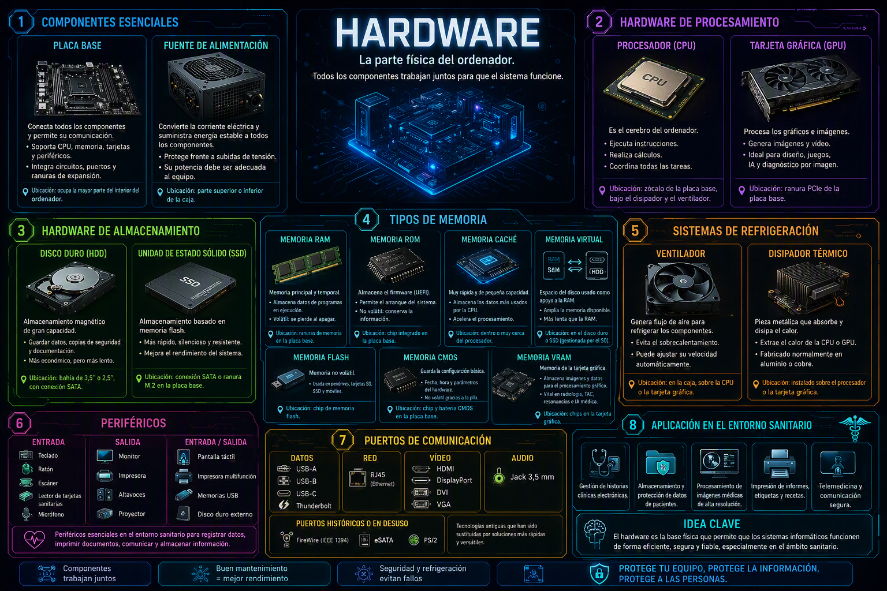
10 · Resumen del bloque
- El hardware es todo lo físico y tangible de un sistema informático.
- Componentes esenciales: placa base y fuente de alimentación.
- Procesamiento: CPU (cerebro) y GPU (imágenes).
- Almacenamiento: HDD (espacio) y SSD (velocidad).
- Memorias: RAM (trabajo), ROM (arranque), caché (velocidad), virtual (apoyo), flash/CMOS/VRAM (funciones específicas).
- Refrigeración: ventilador y disipador evitan el sobrecalentamiento.
- Periféricos: de entrada, de salida y de entrada/salida.
- Puertos: datos, red, vídeo, audio e históricos.
Todos los días trabajas con estos elementos en admisión, consultas, laboratorios y archivo. Comprenderlos permite mantener los equipos y evitar o resolver incidencias.
🧩 Cuestionario final del bloque: realiza el cuestionario «HW-EXAMEN Hardware» en Aules. Combina preguntas aleatorias de todos los apartados y se guardará tu mejor nota hasta la fecha de cierre.